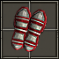
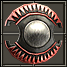

| 中文名称 | 套装奖励 | 组件名称 | 组件种类 | 组件属性 | 需要力量 | 需要敏捷 | 需要智力 | 需要等级 | 英文名称 |
| 阿瑞斯之子 |
2 件奖励： 10% 攻击伤害转换为 自身生命值增加 全套奖励： +20% 伤害 15% 攻击伤害转换为 自身生命值增加 +20% 攻击速度 |
福波斯护臂  |
臂(战) |
492 护甲 10.0% 机率发动: 3.0 秒恐惧 50% 减慢移动 持续 3.0 秒 33 ~ 42 生命吸取反击在3.0秒内 100% 吸取生命抵抗 +40% 攻击速度 +72 点战斗能力 +1 到所有技能 套装：阿瑞斯之子 组件之一 |
525 | 0 | 0 | 38 | Children of Ares |
|
帝摩斯的恐惧  |
盾 |
45% 机率格挡掉 640 伤害 2.50 秒格挡恢复 212 伤害 +10% 伤害 66 ~ 114 生命吸取反击在3.0秒内 23% 穿刺抵抗 23% 毒素抗性 23% 元素抗性 +4% 盾牌格挡 +72 点战斗能力 +1 到所有技能 套装：阿瑞斯之子 组件之一 |
440 | 0 | 0 | 38 | Children of Ares | ||
混乱短剑 |
剑 |
131 ~ 136 伤害 15% 穿刺 速度：0.50（基础攻速：106%） +10% 伤害 30 ~ 35 额外伤害 10.0% 机率发动 5.0 秒混乱 +72 点战斗能力 赋予技能 :战争号角 等级：3 战争号角的胜利呼唤可令敌人暂时昏迷。 技能类别：攻击、范围 56 法力消耗 18.0 秒 冷却 施法距离：近 攻击时不附加种族伤害 8.8 米范围 1.5 ~ 3.9 秒眩晕 套装：阿瑞斯之子 组件之一 |
331 | 268 | 0 | 38 | Children of Ares |
|